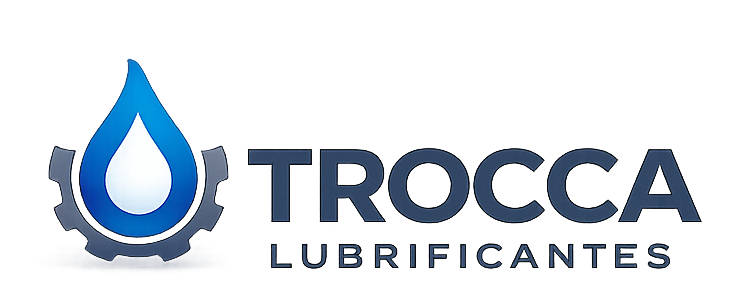

Evita desgaste
Ajuda a preservar componentes internos e trocas suaves.

Troca de óleo de câmbio automático
Você pode economizar até R$40 mil fazendo a manutenção correta do câmbio automático.
Quero fazer um orçamento agoraEntenda rápido
O óleo do câmbio automático trabalha sob alta temperatura e pressão. Com o tempo, ele perde eficiência, deixa de proteger corretamente as peças internas e pode acelerar o desgaste do sistema.
Quando essa manutenção é ignorada, o problema costuma aparecer tarde: trancos, patinação, ruÃdos, aquecimento e falhas que podem virar um reparo de alto custo.
O risco real
O câmbio desgasta silenciosamente. Muitas vezes o carro continua rodando normalmente enquanto o fluido já não protege como deveria. Quando o sintoma aparece, o prejuÃzo pode ser grande.
Manutenção preventiva
Ajuda a preservar componentes internos e trocas suaves.
Reduz o risco de funcionamento irregular e panes no conjunto.
Fluido correto trabalha melhor em temperatura e pressão.
Manutenção preventiva custa muito menos que reparar o câmbio.
Solução técnica
A troca correta do óleo de câmbio automático ajuda a manter lubrificação, pressão e proteção interna do sistema. O segredo está em usar o fluido adequado e seguir o procedimento certo para o veÃculo.
Na Trocca Lubrificantes, avaliamos a aplicação correta antes do serviço, explicamos o processo e usamos produtos compatÃveis com a especificação do fabricante.